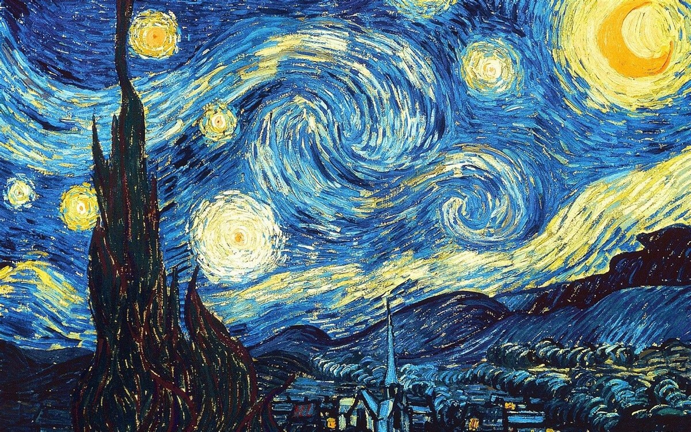

博客伊始
作者：冬结
写在前面：
偶然看到Hexo模板的博客，观感不错，加上前辈也搭过，就试试以这种相对简单的形式搭建起来玩。一方面简单学习以现有框架搭建专属博客的“技术”，另一方面也能有个容器装一点自己的笔记，尽管可能比较少，可能并不安全，聊胜于无。
兴趣
我的兴趣，很难讲。佛系（可能）心态的人在平静生活中貌似对所有的事不放心上，所以，电影可以不看、单车可以不骑、乒乓球可以不打、书可以不阅读、随笔可以不写、游戏可以不玩。自我认知是一个漫长的过程，从浪漫理想主义到实用现实主义，说到底也划不清界限。妥协的做法是就此作罢，不去深究，也就能将困惑搁置一旁。况且说辞也是一大把，比如复杂的个体就能说服我自己。一贯的自我否定，也可以说深究一法至少能够审视自我更加全面深刻，更加接近真实。否定之否定，打住！
接着说兴趣。从某种维度上讲，兴趣带来愉悦、专注与充实感。
这样说来，好的电影是我的兴趣，带给我专注与思考。看过的电影也不少，影评却没尝试过一篇。电影没有带给我充实感，但我并不认为它在浪费时间。娱乐的底质，依旧能够容纳艺术与生活。尽管总能从这种媒介中看到不真实，生活的经验依然鲜活。现在的我能以相对包容的眼光对待现实的种种“怪象”，大抵与之有所关联。
骑单车溜达也算得上。单车是真的单车，单人单骑，随便找个目标，也就慢慢悠悠的去。骑行就不能描述我的方式了，老老实实地去骑单车溜达。某次，什么背景的现在全无记忆，只是感到沉闷的低落，简直到不能忍受的地步，然后就溜达着去后海那边。也许逛胡同，也许没有。至于能否缓解我的状态，我也记不得。只是到那种状态，我能想到这种方式去排解，多少也算是一种认同吧。
至于随笔（恰当称谓？），也能算是我的兴趣。偶尔写写东西，偶尔是真的偶偶尔。我从写文字当中获取的安静、专注、充实感显而易见，而文字大多都是当时的情绪与想法，可能脱胎于日记，但也将一些真实到黑暗的思考隐藏起来，多少能见光。不知道将自我产出的文字视若珍宝算不算病态，但我的确珍视，在我眼里这些文字能真切表示一种状态，这一刻我就是美化的真实的。至于这种方式何以占据重要的位置，大概因为内心戏丰富如我，不善表达情绪，多少是关掉大门开几扇窗。
其他能说的，读书、乒乓和游戏，目前的程度都还比较浅。曾经都热过一阵的行为，慢慢沉寂下来也沾上了尘土。所谓的我的兴趣，没得一项算是个人特长。骑车只是休闲，电影只是娱乐，随笔也只是偶尔的文艺，但是至少这些，能够成为生活的调剂，是能够令我感到舒适的生活方式。
工作
整理些技术向的学习内容，也多少要往这博客里边搁，况且，这本就是搭建这玩意的初衷。尽管不太喜欢用“工作”一词，但还是必须得慢慢习惯的。
求学时期拥有很好的学习环境，这段时间也就余下几年，两者都不得不承认。实验室的一些开发工作，还有自己看过的、学过的、实践过的一些内容，选择性的往这个博客里边搁。尽量减少一些空洞的文字（多一些图），减少随处可见的教程，多一点自己的总结，就是描述不规范，甚至有错误也无关紧要。他人的是他人的，转化为自己的才是自己的。尽管这些话可有可无，也就这样摆在这里了。
至于具体的工作内容，也没法细说。只是一段时间过去，觉得稍微闲下来时，慢悠悠写一点总结，多少能够察觉出自己在缓慢的生长，就很开心了。至于成长的快与慢，也不多去琢磨。吃饭慢，跑步慢，性子慢……真要快节奏起来，真就为难我“胖虎”了！
成长
现在过多的想法与计划一如既往地空白，只是希望每天有点进步，慢慢生长吧。
趁现在还有点记忆，罗列下自初中以来每个阶段自我希求的关键词。
1 | 改变 ：白墙上丑陋的浓墨毛笔字，墨迹未干尚不回望，小屋也拆了，斑驳的往事不能再找回。 |
结束
今天是2019年9月20日，算是一个开始吧！a
